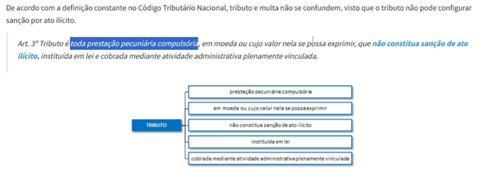
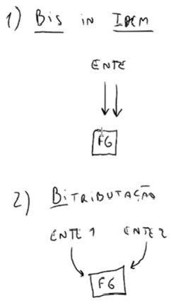
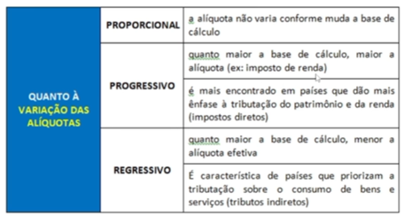

← Voltar para o Início
003 - Conceito e Classificação de Tributos
O que é Tributo? (Art. 3º do CTN)
Definição Legal: "Tributo é toda prestação pecuniária compulsória, em moeda ou cujo valor nela se possa exprimir, que não constitua sanção de ato ilícito, instituída em lei e cobrada mediante atividade administrativa plenamente vinculada."
- Prestação pecuniária: Deve ser paga em dinheiro ou valor conversível em moeda.
- Compulsória: Obrigatória, não depende da vontade do contribuinte.
- Não constitui sanção de ato ilícito: Tributo NÃO é multa! Não pune crime ou infração.
- Instituída em lei: Princípio da Legalidade (só lei cria ou aumenta).
- Cobrança vinculada: O agente público não tem escolha, preencheu os requisitos, tem que cobrar.
⚠️ Diferença de Prova: Tributo vs Multa
Tributo e multa NÃO se confundem! O tributo não pode configurar sanção por ato ilícito. Porém, a multa é uma obrigação principal (obrigação de pagar/dar), assim como o tributo.

Espécies Tributárias: As Duas Teorias Clássicas
⚖️ Teoria Tripartite (Adotada expressamente pelo CTN): Divide os tributos em 3 espécies (Impostos, Taxas e Contribuições de Melhoria). O critério definidor é o Fato Gerador (Art. 4º CTN). Denominação e destinação legal não importam aqui.
⚖️ Teoria Pentapartite (Adotada pelo STF e Doutrina Moderna): Classifica em 5 espécies ao incluir os Empréstimos Compulsórios e as Contribuições Especiais. O critério definidor passa a considerar a Destinação legal do produto da arrecadação.
O Ciclo de Vida do Tributo: Da Lei ao Dinheiro no Cofre
Um tributo nasce e se desenvolve em etapas estritas e cruciais. Compreender essa linha do tempo evita qualquer pegadinha:
-
1. A Criação Abstrata (Hipótese de Incidência / Lei)
O Estado não tira valores do nada. Primeiro, o Poder Legislativo competente edita uma norma prévia descrevendo minuciosamente uma situação teórica, quem deve pagar, qual a alíquota e qual a base de cálculo. É o plano das ideias, a mera previsão em lei.
-
2. O Nascimento Prático (Ocorrência do Fato Gerador)
A lei pode passar anos publicada, mas o tributo só ganha vida concreta no exato milésimo de segundo em que aquela situação teórica prevista acontece no mundo real. O Fato Gerador é o "como ele funciona", o gatilho prático que aciona o sistema.
💡 Exemplos de Fato Gerador (Mundo Real):
• Imposto de Renda (IR): Nasce quando você recebe ou aufere renda.
• IPVA: Nasce em 1º de janeiro de cada ano ou ao adquirir o veículo.
• ICMS: Nasce no momento em que uma mercadoria circula ou é vendida.
-
3. O Vínculo Jurídico (A Obrigação Tributária - Art. 113 CTN)
Consumado o Fato Gerador, a Obrigação Tributária se materializa instantaneamente por força da lei (ex lege). O contribuinte agora está amarrado ao Estado pelo dever jurídico. Ela é compulsória e subdivide-se em duas naturezas:
- Obrigação Principal: Natureza patrimonial. É a obrigação de dar, de enfiar a mão no bolso e pagar o tributo ou a respectiva multa.
- Obrigação Acessória: Natureza instrumental. São deveres administrativos de fazer ou não fazer (emitir documentos, prestar declarações) no interesse da fiscalização.
Conflitos de Competência: Bis in Idem vs Bitributação
O ordenamento jurídico veda abusos e dupla cobrança sobre a mesma base de riqueza, com distinções cruciais para a prova:
🔄 Bis in Idem (Geralmente lícito se autorizado na CF): O MESMO ente federativo cobra dois ou mais tributos sobre o mesmo Fato Gerador.
👉 Exemplo Real: A União cobrando simultaneamente o IRPJ e a CSLL sobre o lucro da empresa.
💥 Bitributação (Regra Geral: Vedada): Entes federativos DIFERENTES exigem tributos sobre o mesmo Fato Gerador.
👉 Exemplo de Conflito: A União (via ITR) e um Município (via IPTU) exigindo imposto sobre o mesmo terreno.

Classificação das Alíquotas
Como o valor do imposto varia de acordo com o tamanho da base de cálculo:

Dicionário do Auditor (Vocabulário Técnico)
- Obrigação ex lege: Obrigação que nasce diretamente por força da lei.
- Legislação infraconstitucional: Qualquer norma jurídica que está "abaixo" da Constituição Federal.
- Legislação infralegal: Atos normativos que estão "abaixo" da lei (decretos, portarias), sem poder de criar tributo.
- Arquétipo genérico: Regra geral ou modelo padrão previsto abstratamente.
💡 Art. 146, III da CF: Normas gerais de Direito Tributário exigem obrigatoriamente Lei Complementar!
• Exemplos: CTN (Lei 5.172/66), Lei Kandir (ICMS - LC 87/96), Lei do ISS (LC 116/03).